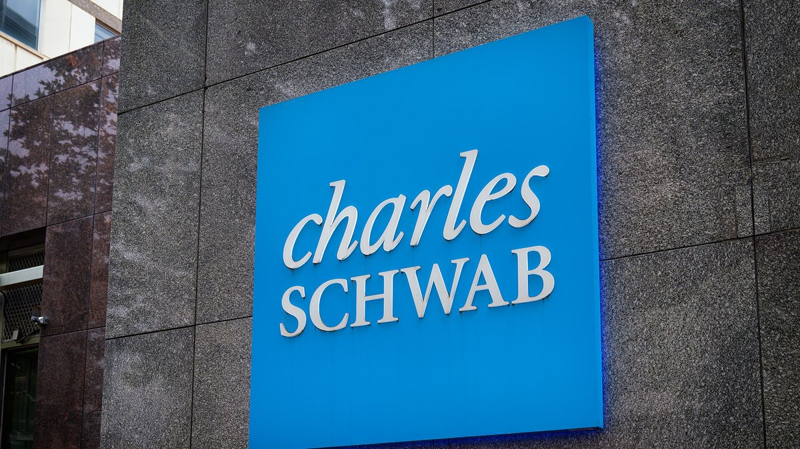

Bank dan broker besar AS makin masuk crypto: Schwab buka trading SOL, AVAX, LINK; PNC uji terima pembayaran USDCBig US banks and brokers push further into crypto: Schwab opens SOL, AVAX, LINK trading; PNC pilots receiving USDC payments
Charles Schwab menambah Solana, Avalanche, dan Chainlink ke platform Schwab Crypto, sehingga total ada lima aset. Di hari yang sama, PNC Bank meluncurkan pilot bagi klien korporat untuk menerima pembayaran stablecoin USDC lewat Coinbase.Charles Schwab added Solana, Avalanche and Chainlink to its Schwab Crypto platform, bringing the total to five assets. On the same day, PNC Bank launched a pilot letting corporate clients receive USDC stablecoin payments via Coinbase.

Poin utamaKey points
- Charles Schwab mengumumkan pada 9 November 2026 bahwa klien Schwab Crypto kini bisa membeli dan menjual SOL, AVAX, dan LINK, selain bitcoin dan ethereum.
- Schwab Crypto mulai diluncurkan bertahap pada Mei 2026 dan tersedia untuk semua klien ritel yang memenuhi syarat sejak Oktober. Biayanya 0,75% dari nilai tiap transaksi.
- Menurut Finance Magnates dan crypto.news, layanan ini tidak tersedia untuk penduduk New York dan Louisiana, wilayah teritori AS, maupun luar negeri.
- PNC Bank, juga pada 9 November, meluncurkan pilot terbatas agar klien Corporate & Institutional Banking bisa menerima USDC di jaringan Ethereum lewat produk Coinbase Payment.
- USDC yang diterima otomatis dikonversi 1:1 ke dolar AS dan disetor ke rekening PNC klien.
- Charles Schwab announced on 9 November 2026 that Schwab Crypto clients can now buy and sell SOL, AVAX and LINK, in addition to bitcoin and ethereum.
- Schwab Crypto began rolling out in May 2026 and has been available to all eligible retail clients since October. The fee is 0.75% of the value of each trade.
- According to Finance Magnates and crypto.news, the service is not available to residents of New York and Louisiana, US territories, or abroad.
- PNC Bank, also on 9 November, launched a limited pilot letting Corporate & Institutional Banking clients receive USDC on the Ethereum network via Coinbase Payment products.
- Incoming USDC is automatically converted 1:1 into US dollars and deposited into the client's PNC account.
Charles Schwab mengumumkan pada Senin (9/11/2026) bahwa tiga token baru kini bisa dibeli dan dijual di platform Schwab Crypto: Solana (SOL), Avalanche (AVAX), dan Chainlink (LINK). Dengan tambahan ini, klien Schwab Crypto bisa memperdagangkan lima aset digital: bitcoin, ethereum, solana, avalanche, dan chainlink.
Menurut rilis resmi Schwab, Schwab Crypto mulai diluncurkan ke klien pada Mei 2026 dan tersedia untuk semua klien ritel yang memenuhi syarat sejak Oktober. Schwab menyebut biaya transaksinya 75 basis poin, atau 0,75% dari nilai tiap transaksi, dan berencana menambah aset digital lain secara bertahap.
Finance Magnates dan crypto.news melaporkan layanan ini disediakan lewat Charles Schwab Premier Bank, SSB, dan tidak tersedia bagi penduduk New York dan Louisiana, wilayah teritori AS, maupun yurisdiksi internasional. Finance Magnates juga mencatat aset kripto di layanan ini tidak dilindungi asuransi FDIC maupun SIPC.
Pada hari yang sama, PNC Bank mengumumkan klien Corporate & Institutional Banking kini bisa menerima pembayaran USDC, stablecoin yang didukung dolar AS, di jaringan Ethereum lewat produk Coinbase Payment. USDC yang masuk otomatis dikonversi 1:1 ke dolar AS dan disetor ke rekening PNC yang ditunjuk. PNC menyebut layanan ini awalnya ditawarkan terbatas kepada klien yang memenuhi syarat sebagai program pilot.
"Saat ini, ini soal menguji dan belajar bersama klien kami," kata Tom Lang, kepala produk dan operasi treasury management PNC, kepada Reuters. Menurut Cointelegraph, PNC tidak mengungkap biaya, waktu penyelesaian, maupun jumlah klien yang ikut pilot.
Charles Schwab announced on Monday (9/11/2026) that three new tokens are now available to buy and sell on the Schwab Crypto platform: Solana (SOL), Avalanche (AVAX) and Chainlink (LINK). With these additions, Schwab Crypto clients can trade five digital assets: bitcoin, ethereum, solana, avalanche and chainlink.
According to Schwab's official release, Schwab Crypto began rolling out to clients in May 2026 and has been available to all eligible retail clients since October. Schwab said its trading fee is 75 basis points, or 0.75% of the value of each trade, and that it plans to add other digital assets over time.
Finance Magnates and crypto.news reported that the service is provided through Charles Schwab Premier Bank, SSB, and is not available to residents of New York and Louisiana, US territories or international jurisdictions. Finance Magnates also noted that crypto holdings in the service are not covered by FDIC insurance or SIPC protection.
On the same day, PNC Bank announced that Corporate & Institutional Banking clients can now receive payments in USDC, a US dollar-backed stablecoin, on the Ethereum network via Coinbase Payment products. Incoming USDC is automatically converted 1:1 into US dollars and deposited into a designated PNC account. PNC said the service is initially offered on a limited basis to eligible clients as a pilot program.
"Right now, this is about testing and learning with our clients," Tom Lang, PNC's head of treasury management product and operations, told Reuters. According to Cointelegraph, PNC did not disclose fees, settlement times or the number of clients in the pilot.
Kenapa pentingWhy it matters
Langkah ini menunjukkan lembaga keuangan tradisional di AS terus memperluas akses ke aset kripto dan stablecoin. Ini juga menambah jalur akses institusi dan ritel ke altcoin besar, bukan hanya BTC dan ETH.These moves show traditional US financial institutions continuing to widen access to crypto assets and stablecoins. They also add access routes for institutions and retail to large altcoins, not just BTC and ETH.
Foto: kantor Charles Schwab di Bethesda, Maryland (Tony Webster, CC BY 2.0, Wikimedia Commons). Foto ilustrasi.Photo: Charles Schwab office in Bethesda, Maryland (Tony Webster, CC BY 2.0, Wikimedia Commons). Illustrative photo.
SumberSources
- Charles Schwab: rilis resmi penambahan SOL, AVAX, dan LINK di Schwab Crypto
- Finance Magnates: Schwab Crypto Adds Solana, Avalanche and Chainlink
- PNC: rilis resmi pembayaran stablecoin untuk klien korporat
- Reuters via Investing.com: PNC to offer stablecoin payments to clients in Coinbase partnership
- Cointelegraph: PNC Brings USDC Payments to Institutional Banking Clients
Ikuti COIN BRO diFollow COIN BRO on Telegram
Dapatkan berita seperti ini lebih cepat di channel kami. Gratis.Get news like this faster on our channel. Free.
Bukan saran finansial. Artikel ini adalah informasi dan edukasi, bukan ajakan membeli atau menjual aset apa pun. Aset kripto berisiko tinggi. Fakta mengikuti sumber yang tercantum; bagian berlabel interpretasi adalah pendapat, bukan fakta. Menemukan kesalahan? Lihat kebijakan koreksi.Not financial advice. This article is information and education, not a solicitation to buy or sell any asset. Crypto assets are high risk. Facts follow the listed sources; sections labeled interpretation are opinion, not fact. Found an error? See our corrections policy.